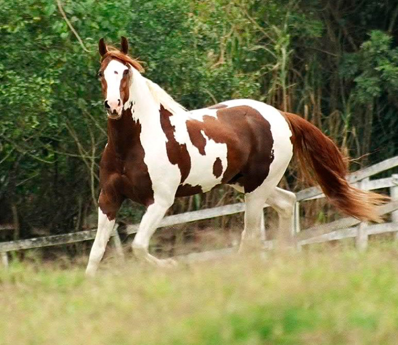
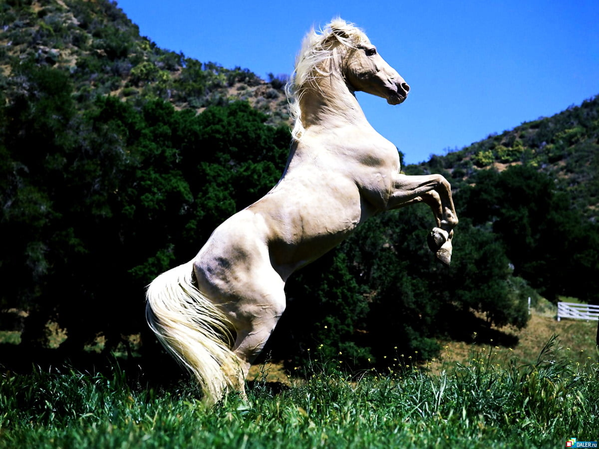
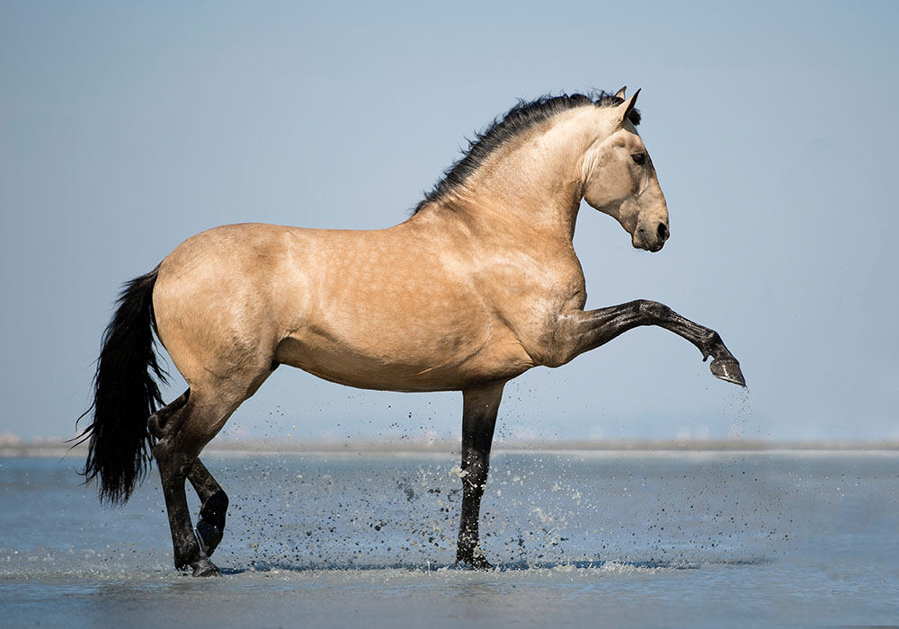
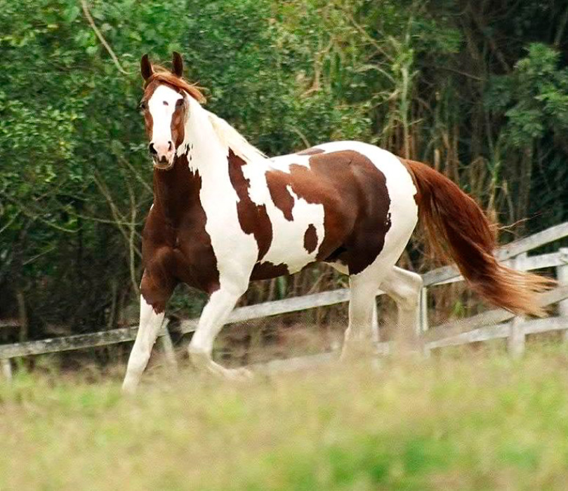
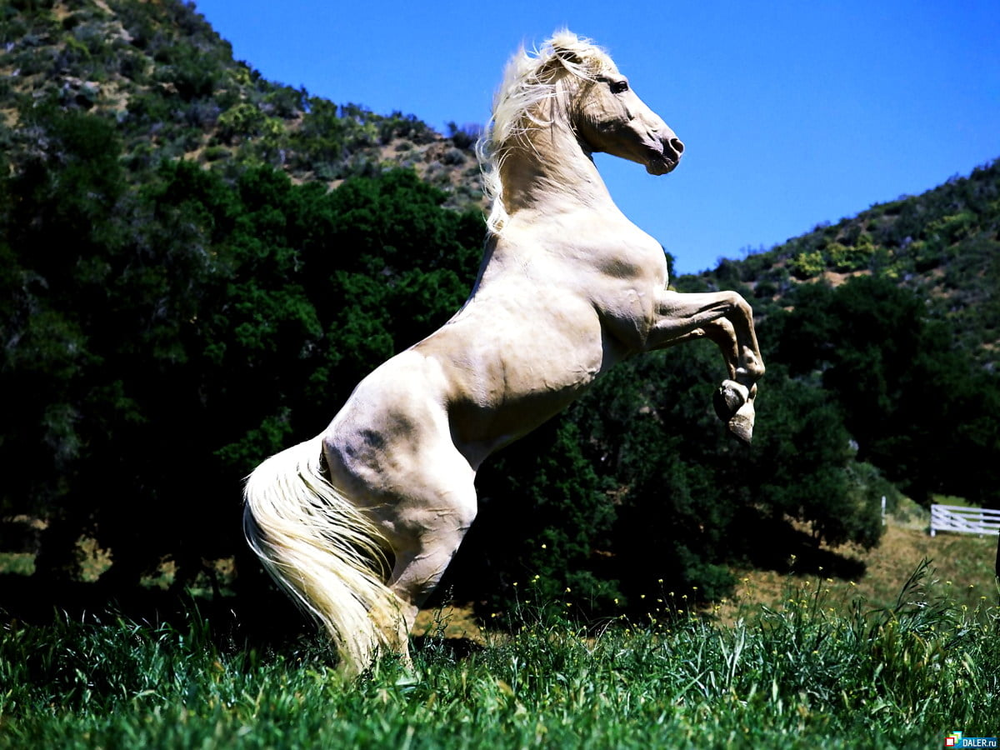
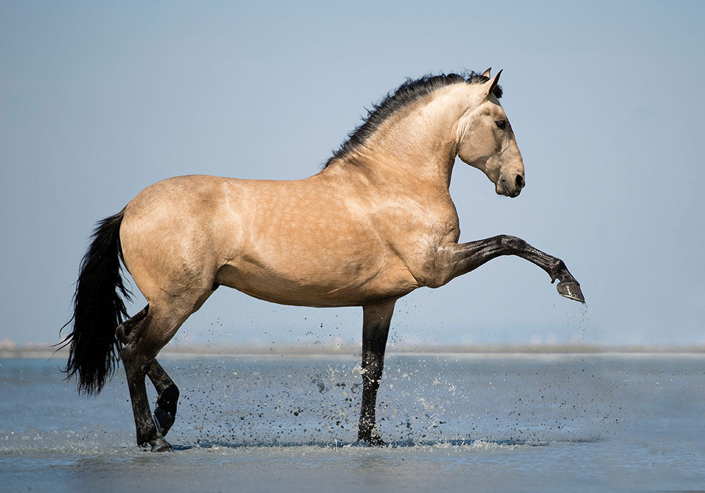

Cavalospedia
Onde a paixão por cavalos ganha vida!
Os cavalos são maniferos de grande porte pertencentes á família Equidae, conhecidos por sua elegancia e força, Sua pelagem pode variar em cores e padrões.
Olhar para um cavalo é como olhar para um mar de serenidade, onde a traquilidade e intensidade coexistem em perfeita harmonia.
 




